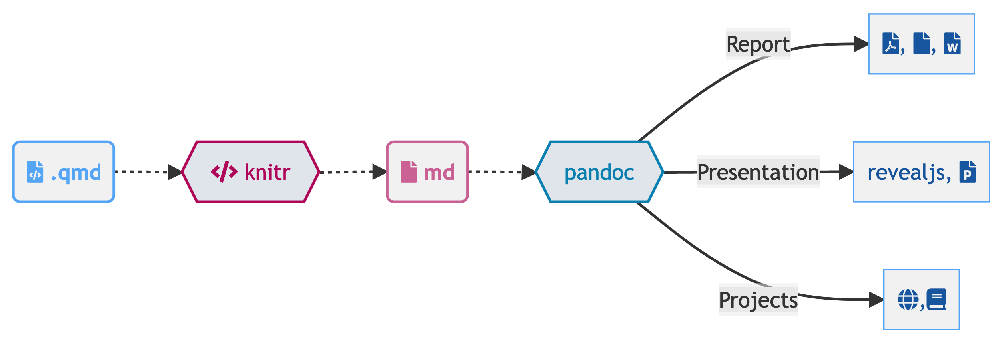
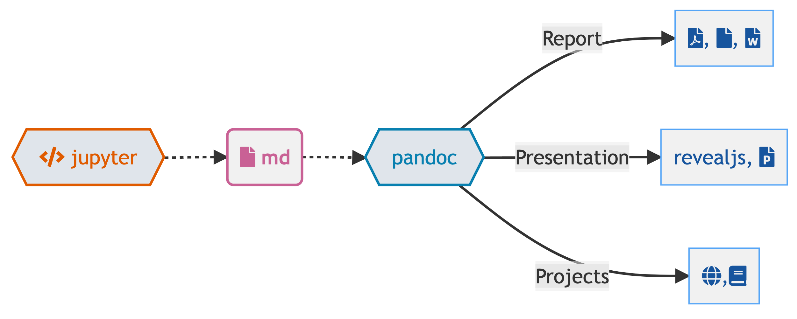
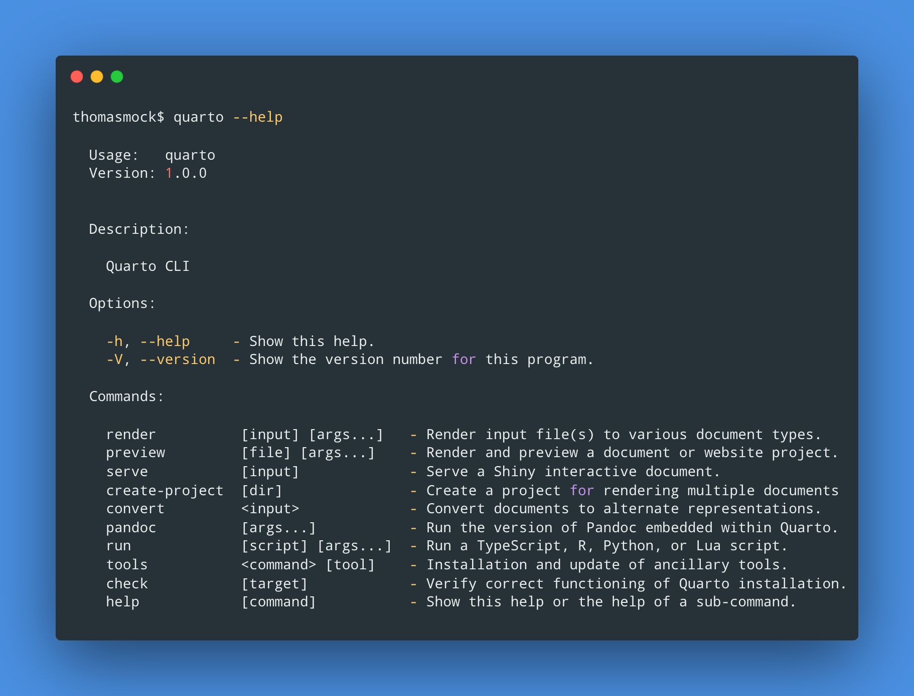

thomasmock$ quarto --help
Usage: quarto
Version: 1.0.36
Description:
Quarto CLI
Options:
-h, --help - Show this help.
-V, --version - Show the version number for this program.
Commands:
render [input] [args...] - Render input file(s) to various document types.
preview [file] [args...] - Render and preview a document or website project.
serve [input] - Serve a Shiny interactive document.
create-project [dir] - Create a project for rendering multiple documents
convert <input> - Convert documents to alternate representations.
pandoc [args...] - Run the version of Pandoc embedded within Quarto.
run [script] [args...] - Run a TypeScript, R, Python, or Lua script.
install <type> [target] - Installs an extension or global dependency.
publish [provider] [path] - Publish a document or project. Available providers include:
check [target] - Verify correct functioning of Quarto installation.
help [command] - Show this help or the help of a sub-command. 01 - Performing magic
with Quarto
Tom Mock
2022-08-02
Hello Quarto
We assume
You know R
You know a little bit of Markdown
 You want to learn about Quarto, the next-generation of RMarkdown
You want to learn about Quarto, the next-generation of RMarkdown
We’ll teach you
Quarto syntax and formats
More Markdown
Even more R along the way!
Workshop Prep
- Content Website: https://jthomasmock.github.io/quarto-in-two-hours/
- Are you on the latest version of RStudio i.e.
v2022.07.1or later?
pkg_list <- c(
"tidyverse", "gt", "gtExtras", "reactable", "ggiraph", "here", "quarto",
"rmarkdown", "gtsummary", "palmerpenguins", "fs", "skimr"
)
install.packages(pkg_list)Great, let’s get started!
Our Turn
- Open
SesameRStudio - If you haven’t already, clone the workshop:
https://github.com/jthomasmock/quarto-workshop.git - Open the
quarto-workshopRProject
Hello Quarto
Quarto® is an open-source scientific and technical publishing system built on Pandoc
You can weave together narrative text and code to produce elegantly formatted output as documents, web pages, blog posts, books and more.
Why Quarto?1
Shakespeare’s Hamlet as a “Quarto”


What about RMarkdown?
A brief history of knitr
2011-10-16: initial development
2012-01-17: initial CRAN release
50 CRAN releases in 10 years https://cran.r-project.org/src/contrib/Archive/knitr/
A brief history of rmarkdown
Initial experiment:
knitr::pandoc()(2014)Matured as the
rmarkdownpackage (2015)
What about RMarkdown?

So what is Quarto?
Quarto is the next-generation of RMarkdown.
For everyone.
So what is Quarto?
Quarto is a command line interface (CLI) that renders plain text formats (
.qmd,.rmd,.md) OR mixed formats (.ipynb/Jupyter notebook) into static PDF/Word/HTML reports, books, websites, presentations and more
Quarto, more than just knitr
We learned from 10 years of literate programming with knitr + rmarkdown

Quarto, more than just knitr

Quarto, more than just knitr

Comfort of your own workspace


Quarto, more internals
knitrorjupyterevaluates R/Python/Julia code and returns a.mdfile along with the evaluated code
- Quarto applies Lua filters + CSS/LaTeX which is then evaluated alongside the
.mdfile by Pandoc and converted to a final output format
Here is an example of a Lua filter that converts strong emphasis to small caps, from https://pandoc.org/lua-filters.html
return {
{
Strong = function (elem)
return pandoc.SmallCaps(elem.c)
end,
}
}Lua filters written by R/Python/Julia developers should be interchangeable between formats - not language specific and often not even format specific!

So what is Quarto?
Quarto® is an open-source scientific and technical publishing system built on Pandoc
So what is Quarto?
A Quarto document i.e. a
.qmdis a plain text file, like a.rmd, that can be rendered to many different formats

One install, “Batteries included”
- RMarkdown grew into a large ecosystem, with varying syntax.
Quarto comes “batteries included” straight out of the box
- HTML reports and websites
- PDF reports
- MS Office (Word, Powerpoint)
- Presentations (Powerpoint, Beamer,
revealjs) - Books
- Any language, exact same approach and syntax
Many Quarto formats
| Feature | R Markdown | Quarto |
|---|---|---|
| Basic Formats | ||
| Beamer | ||
| PowerPoint | ||
| HTML Slides | ||
| Advanced Layout |
Many Quarto formats
| Feature | R Markdown | Quarto |
|---|---|---|
| Cross References | ||
| Websites & Blogs | ||
| Books | ||
| Interactivity | Shiny Documents | Quarto Interactive Documents |
| Paged HTML | pagedown | Summer 2022 |
| Journal Articles | rticles | Summer 2022 |
| Dashboards | flexdashboard | Fall 2022 |
What to do with my existing .Rmd or .ipynb?
For some of you - nothing changes! Keep using RMarkdown and Jupyter.
However, most existing .rmd or .ipynb can be rendered as-is via Quarto
quarto render my-favorite.rmd --to htmlSince Jupyter notebooks can either be treated as a linear document to be re-executed or an already evaluated document there are additional options like: --execute
quarto render my-favorite.ipynb --to html --executeWhy Quarto, instead of RMarkdown
- Batteries included, shared syntax
- Choose your own editor and your preferred data science language
- Better accessibility and richer features out of the box
- More enhancements overtime - RMarkdown still maintained, but majority of new features built into Quarto
Collaboration with other colleagues in other languages - shared format, choose your editor and your native language
Rendering
- Render in RStudio

- System shell via
quarto render
quarto render document.qmd # defaults to html
quarto render document.qmd --to pdf
quarto render document.qmd --to docx- R console via
quartoR package
library(quarto)
quarto_render("document.qmd") # defaults to html
quarto_render("document.qmd", output_format = "pdf")Why Quarto
- Reproducibility
- Re-usability
- Extensibility
- “Lazy” ability
Change your mental model
Source

Output
Change your mental model
Source
Output
Change your mental model
---
title: "ggplot2 demo"
author: "Norah Jones"
date: "5/22/2021"
format:
html:
fig-width: 8
fig-height: 4
code-fold: true
---
## Air Quality
@fig-airquality further explores the impact of temperature
on ozone level.
```{r}
#| label: fig-airquality
#| fig-cap: Temperature and ozone level.
#| warning: false
library(ggplot2)
ggplot(airquality, aes(Temp, Ozone)) +
geom_point() +
geom_smooth(method = "loess"
)
```
Anatomy of a Quarto document
- Metadata (YAML)
---
format: html
---- Code
```{r}
#| eval: true
library(dplyr)
mtcars %>%
group_by(cyl) %>%
summarize(mean = mean(mpg), .groups = "drop")
```# A tibble: 3 × 2
cyl mean
<dbl> <dbl>
1 4 26.7
2 6 19.7
3 8 15.1- Text
# Heading 1
This is a sentence with some **bold text**, some *italic text* and an [image](image.png).Metadata: YAML
The YAML metadata or header is:
processed in many stages of the rendering process and can influence the final document in many different ways. It is placed at the very beginning of the document and is read by each of Pandoc, Quarto and
knitr. Along the way, the information that it contains can affect the code, content, and the rendering process.
YAML
---
title: "My Document"
format:
html:
toc: true
code-fold: true
---Markdown
Quarto is based on Pandoc and uses its variation of markdown as its underlying document syntax. Pandoc markdown is an extended and slightly revised version of John Gruber’s Markdown syntax.
Markdown is a plain text format that is designed to be easy to write, and, even more importantly, easy to read
Text Formatting
| Markdown Syntax | Output |
|---|---|
|
italics and bold |
|
superscript2 / subscript2 |
|
|
|
verbatim code |
Headings
| Markdown Syntax | Output |
|---|---|
|
Header 1 |
|
Header 2 |
|
Header 3 |
|
Header 4 |
|
Header 5 |
|
Header 6 |
Code
```{r}
#| output-location: column
#| label: fig-airquality
#| fig-cap: Temperature and ozone level.
#| warning: false
library(ggplot2)
ggplot(airquality, aes(Temp, Ozone)) +
geom_point() +
geom_smooth(method = "loess"
)
```
Code, more than just R
```{python}
#| label: fig-polar
#| fig-cap: "A line plot on a polar axis"
import numpy as np
import matplotlib.pyplot as plt
r = np.arange(0, 2, 0.01)
theta = 2 * np.pi * r
fig, ax = plt.subplots(
subplot_kw = {'projection': 'polar'}
)
ax.plot(theta, r)
ax.set_rticks([0.5, 1, 1.5, 2])
ax.grid(True)
plt.show()
```
What about the CLI?
Quarto is a command line interface (CLI) that renders plain text formats (
.qmd,.rmd,.md) OR mixed formats (.ipynb/Jupyter notebook) into static PDF/Word/HTML reports, books, websites, presentations and more

Our Turn
- In RStudio, open
materials/workshop/01-intro/history.qmd - Render with the RStudio > Render button
- Look at it and compare to Wikipedia source
Move to the integrated terminal and execute:
Render via terminal with
quarto render history.qmd --to pdfCompare to the HTML version
CLI Overview
thomasmock$ quarto --help
Usage: quarto
Version: 1.0.36
Description:
Quarto CLI
Options:
-h, --help - Show this help.
-V, --version - Show the version number for this program.
Commands:
render [input] [args...] - Render input file(s) to various document types.
preview [file] [args...] - Render and preview a document or website project.
serve [input] - Serve a Shiny interactive document.
create-project [dir] - Create a project for rendering multiple documents
convert <input> - Convert documents to alternate representations.
pandoc [args...] - Run the version of Pandoc embedded within Quarto.
run [script] [args...] - Run a TypeScript, R, Python, or Lua script.
install <type> [target] - Installs an extension or global dependency.
publish [provider] [path] - Publish a document or project. Available providers include:
check [target] - Verify correct functioning of Quarto installation.
help [command] - Show this help or the help of a sub-command. Footnotes
We wanted to use a name that had meaning in the history of publishing and landed on Quarto, which is the format of a book or pamphlet produced from full sheets printed with eight pages of text, four to a side, then folded twice to produce four leaves. The earliest known European printed book is a Quarto, the Sibyllenbuch, believed to have been printed by Johannes Gutenberg in 1452–53.↩︎